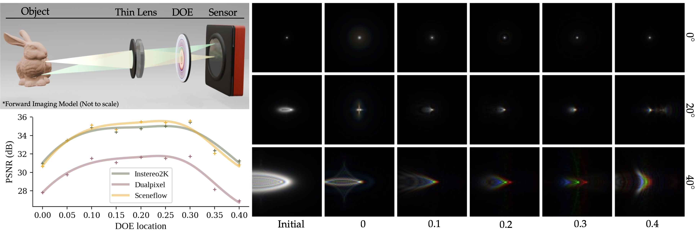
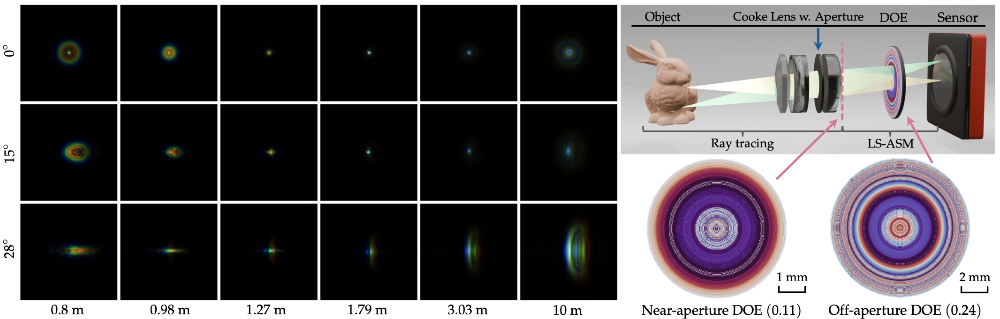
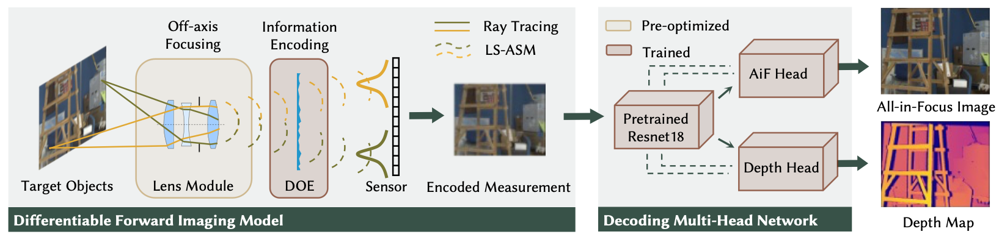
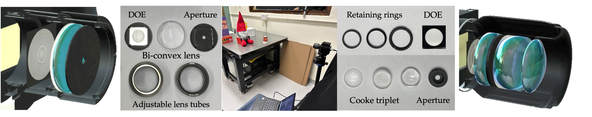

Application 1: Wide-FoV Simple Lens Imaging
Our wide-FoV imaging setup includes a simple focusing lens with an approximate FoV of 45° and a rotational symmetric off-aperture DOE, effectively compensating for most aberrations. State-of-the-art coded-aperture and/or deep optics imaging solutions mostly assume spatial-invariant PSF behavior and demonstrate in experiments a FoV up to 30°.

(Top-left) The conceptual system setup of an off-the-shelf thin lens and an off-aperture DOE. (Bottom-left) The fitted PSNR plots for recovered images across various DOE locations shows that the optimal location is a trade-off point between the aperture and the sensor. The optimal DOE location for each dataset is approximately 0.24. (Right) Comparison of PSF amplitudes at several FoVs when the DOE is placed at different locations.
Indoor and outdoor experimental results for the application of wide-FoV simple lens imaging. The equivalent f-number is 12. ISO is set as 100 for all captures.
A video clip of the wide-FoV simple lens imaging application. The reconstructions demonstrate good temporal consistancy.
Application 2: Wide-FoV Compound Lens RGBD Imaging
We introduce a compound optics prototype designed for wide-FoV depth and color imaging. The system combines an optimized Cooke triplet as the focusing lens module, achieving a practical balance between compactness and aberration correction.

(Left) Optimized PSFs at depths from 0.8 m to 10 m and FoVs up to 28°, using the off-aperture large-FoV EDoF imaging system. Depth layers are sampled uniformly. (Top-right) The 3D model of the optimized system, where the dotted line denotes the location to place the near-aperture DOE. Figure visualization is not drawn to scale. (Bottom-right) Optimized DOE height maps for near (around 0.11) and off aperture (around 0.24) settings.
Indoor and outdoor experimental results for App. 2: wide-FoV AiF and depth imaging. For each scene, we present the captured and reconstructed halves of color images (top), along with their zoom-in patches (bottom-right) and estimated depth map (bottom-left). The equivalent f-number is 7, and the gain set 0 for all captures.
Indoor and outdoor experimental results for App. 2: wide-FoV AiF and depth imaging. For each scene, we present the captured and reconstructed halves of color images (top), along with their zoom-in patches (bottom-right) and estimated depth map (bottom-left). The equivalent f-number is 7, and the gain set 0 for all captures.
System Pipeline

Imaging pipeline of our proposed system. We model the camera’s light propagation using a combination of ray tracing and wave propagation. The DOE placed in-between the lens module and the sensor facilitates information encoding. A multi-head decoding network based on the ResNet architecture is incorporated to support optimization for multiple visual tasks.

(Left) App. 1 prototyping includes an aperture, a thin lens, and a DOE; (Center) The experimental setup. (Right) App. 2 prototype includes an aperture, three refractive lenses, and a DOE.
BibTeX
@article{wei2025learned,
title = {Learned Off-aperture Encoding for Wide Field-of-view RGBD Imaging},
author = {Wei, Haoyu and Liu, Xin and Liu, Yuhui and Fu, Qiang and Heidrich, Wolfgang and Lam, Edmund Y. and Peng, Yifan},
journal = {IEEE Transactions on Pattern Analysis and Machine Intelligence},
year = {2025}
}
Related Projects
You may also be interested in related projects in deep optics:- Liu et al. Coded stereo RGBD imaging, CVPR (Oral) 2025 (link)
- Shi et al. Array-DOE for Hyperspectral Imaging, ACM ToG (Siggraph Asia) 2024 (link)
- Wei et al. Efficient Off-Axis Diffractive Modeling (LS-ASM), Optica 2023 (link)
- Peng et al. Large FoV Imaging with Thin Plate Optics, ACM ToG (Siggraph) 2019 (link)